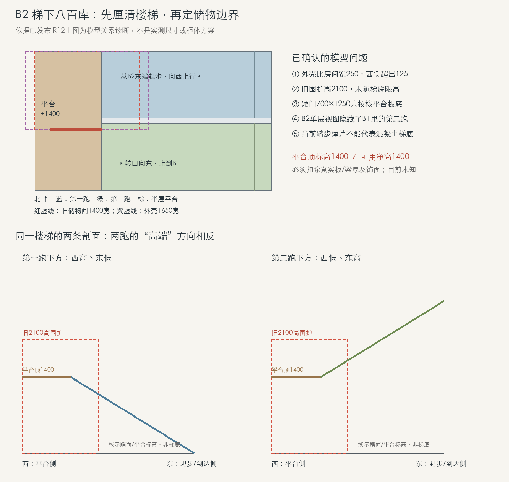

1F 餐边柜 · R15 R02
实体建模中 · 尚未合入本轮图形关系评估已过，正在推进对应柜体实体。
下一步：核对实际实体与评估图的对应关系，再决定合入；本页不宣布实体或全部使用动作已通过。
把已经理清的关系、正在制作的实体和仍待确认的条件分开记录，方便继续讨论，不把研究占位提前当成落地方案。
线上模型仍为 R12，今天仅更新研究图文。
下列柜体与梯下方案尚未合入现有模型，不代表施工、产品或舒适性确认。
“图形关系已评估”不等于“实体已合模”；本页不改变现有 R12 模型。
本轮图形关系评估已过，正在推进对应柜体实体。
下一步：核对实际实体与评估图的对应关系，再决定合入；本页不宣布实体或全部使用动作已通过。
四门方向可继续深化，实体和对应操作仍在制作、核对中。
下一步：以新实体复核分门与使用关系，不把现有模型当作四门版本。
南柜与岛桌作为候选继续评估，尚未替换线上家具。
下一步：先理顺新旧对象、摆位与使用关系，再判断哪些字段和实体可以采用。
已把两跑楼梯、半层平台与旧储物占位放在同一坐标下核对，确认不能照旧矩形外壳直接设计高柜。
下一步：结合真实梯底、板梁和既有开口，划分可用储物高度，再深化外侧分门取物。
已有混凝土楼梯，本轮研究的是既有楼梯下的收纳与饰面，不是新建楼梯。B2 单层视图隐藏了数据归在 B1 的另一跑，不能只看单层画面判断梯下空间。

从 B2 东端起步，向西上行。
X 4123 / 标高 0 → X 1850 / +1400；Y 3050…3950。
两跑在西侧转向连接。
X 950…1850；Y 3050…4920；平台顶标高 +1400。
转回向东，上到 B1；该跑记录在 B1 数据中。
X 1850 / +1400 → X 4123 / +2800；Y 4020…4920。
以上数字单位均为 mm，采用模型坐标及标高基线；2800 总高、1400 半高等均非现场实测。
这些是旧模型表达的诊断，不是批准旧矩形外壳、2100 高围护或 1250 矮门继续使用。
平台下先研究低频矮箱；第一跑下西高东低，第二跑下向东升高。优先研究外侧分门取物，不预设人要钻入储藏间。
核对梯底和板梁下缘、既有侧墙与开口、完成面标高。侧墙能否开口、各区是否连通，均不能默认可以拆改。
概念设计可以继续；具体高度和门位要随真实约束修正。新柜体与新净空通过对应检查后，再单独更新线上模型。